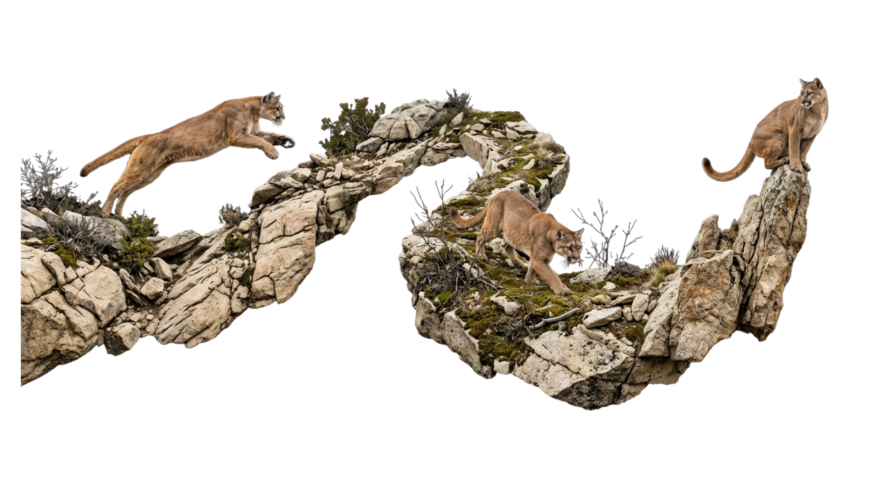
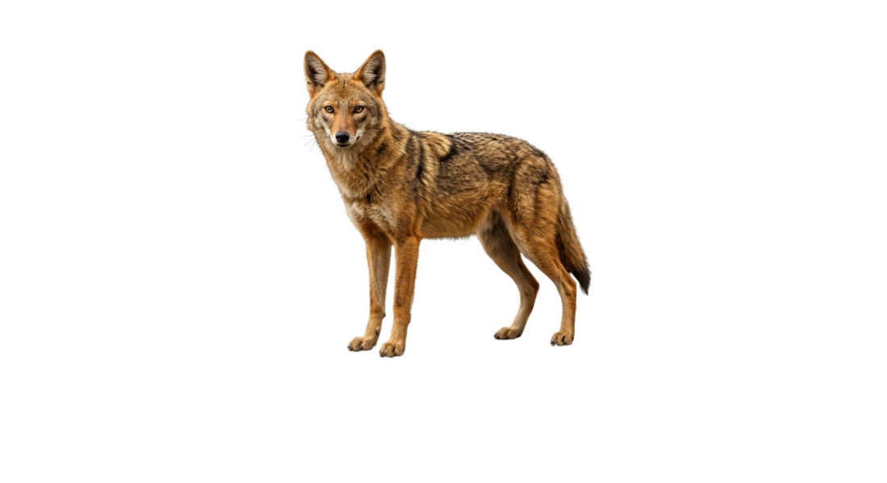

From Mediterranean islands and North African wetlands to the deserts of the American Southwest — fieldwork, monitoring, and conservation programme management across two continents.

WWF North Africa · Tunis
Leading monitoring, evaluation and knowledge management across WWF North Africa's portfolio — designing M&E systems, tracking impact indicators, and ensuring evidence-based implementation.
WWF North Africa · Tunis
Coordinated implementation of conservation projects focused on North African freshwater ecosystems, managing activities and partner relations.
Anza-Borrego Desert State Park · California
Biodiversity assessments in California desert ecosystems with a focus on the Flat-tailed horned lizard — species surveys, ecological monitoring, and occupancy modeling.
Sound Forest Lab, UW–Madison
Supported the lab's bioacoustics research — GIS work, data analysis, and machine-learning pipelines for acoustic biodiversity monitoring.
Exploralis · Tunisia
Supported ecological research and environmental assessment — field surveys, biodiversity documentation, and report writing.
Tunisian Association for Wildlife (ATVS) · 2017–2023
Co-founded Tunisia's wildlife conservation NGO — directing research initiatives, coordinating fieldwork on the Galite Archipelago, and building partnerships with IUCN and regional institutions.

University of Wisconsin–Madison · Fulbright Scholar
Faculty of Sciences of Tunis